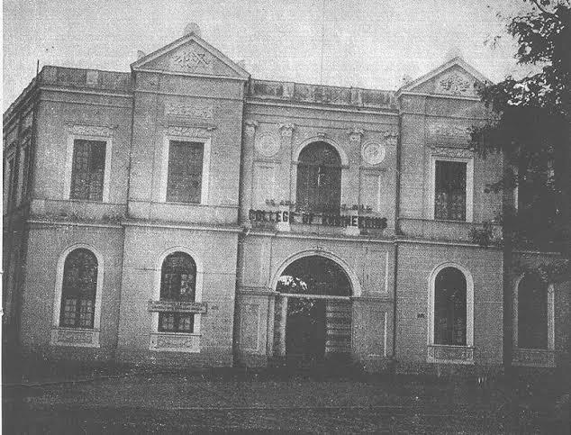
1917
In 1917, UVCE was established by Sir M. Visvesvaraya, aiming to create skilled engineers to support India's infrastructure needs. Initially offering civil and mechanical engineering, the college focused on producing professionals capable of contributing to the construction of roads, bridges, and public buildings in the Mysore State (now Karnataka). The college played a key role in supporting the industrial and infrastructural development in the early 20th century, setting the stage for future growth.
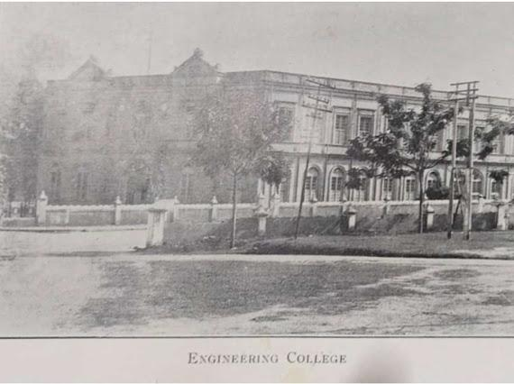
1920s
UVCE produced its first batch of engineers in civil and mechanical fields. Graduates contributed to major infrastructure projects such as railways, dams, and urban planning. This decade saw the college beginning to cement its reputation as one of South India’s premier institutions for technical education. Alumni of this era played crucial roles in various public works initiatives, reflecting UVCE’s growing influence in India's developmental efforts.
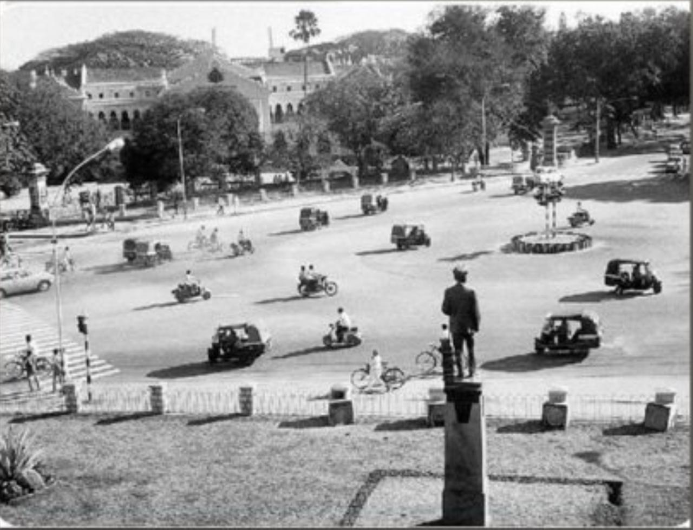
1930s
The 1930s were marked by UVCE’s expansion in civil and mechanical engineering programs. The college focused on increasing its intake capacity to accommodate more students, and additional faculty members were appointed to meet growing demands. UVCE continued to attract talented students from across the region. Its reputation as a leading engineering college began to spread across India, positioning itself as a sought-after destination for engineering education.
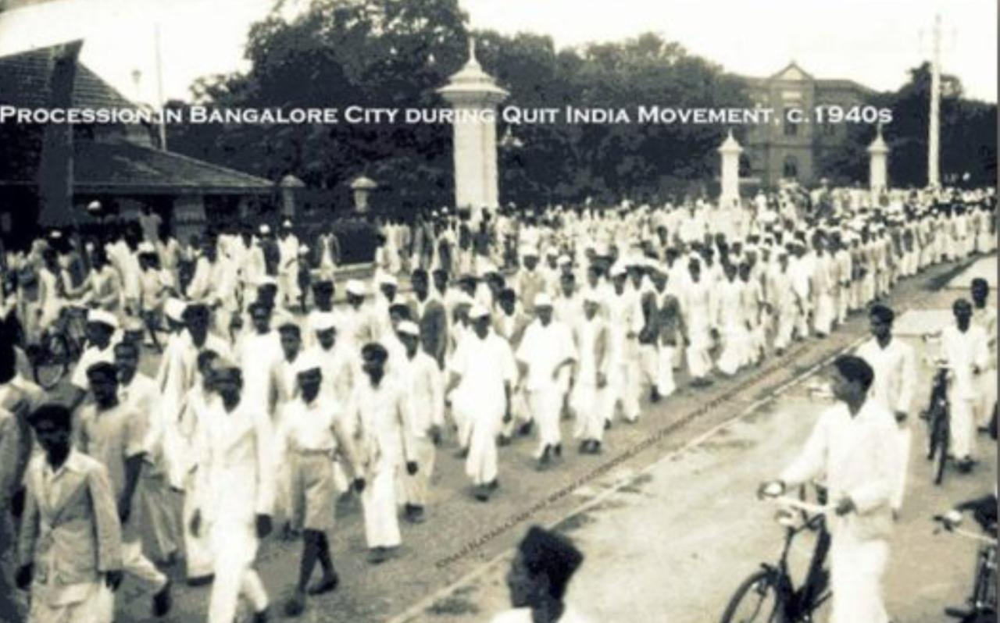
1940s
During World War II, UVCE graduates were called upon to support the war effort by working on essential infrastructure like roads, airstrips, and ports. Post-war, the college played an important role in rebuilding efforts across India. Despite the global challenges of this period, UVCE maintained its standards and continued to produce skilled engineers who helped modernize India's infrastructure in the subsequent post-war reconstruction phase.
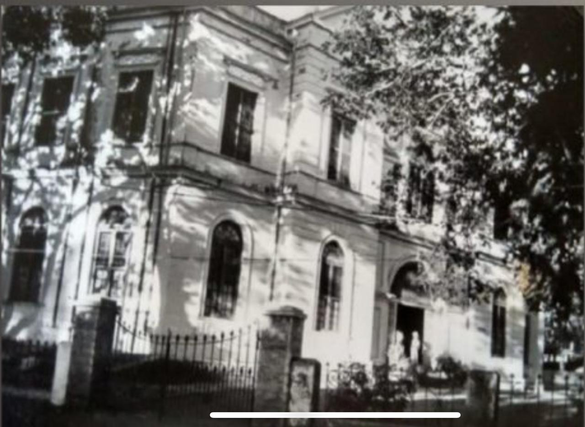
1950s
With India's independence in 1947, UVCE responded to the nation’s industrialization needs by introducing electrical engineering. This department was crucial in addressing the growing demand for power engineers, as India sought to expand its electricity grid. The decade marked the college's contribution to several key national projects, including power plants and industrialization efforts. UVCE’s graduates were instrumental in building a modern, self-reliant India.
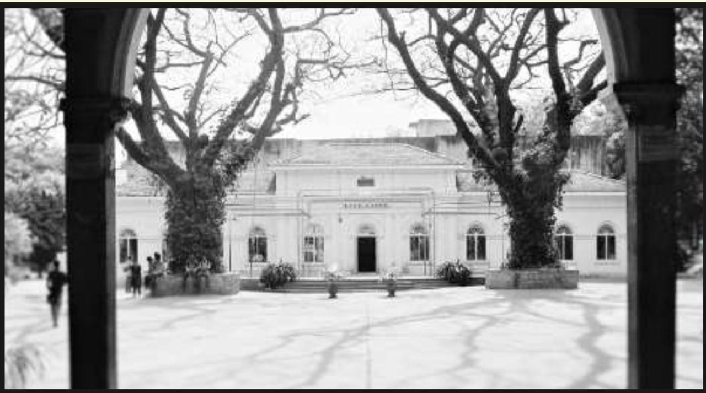
1960s
In 1964, UVCE became affiliated with the newly formed Bangalore University, expanding its reach and resources. This affiliation allowed the college to introduce more diverse programs, including architecture. UVCE’s transition to this larger university framework also brought more students and faculty into its fold, enabling it to further its academic and research endeavors. The 1960s were pivotal in solidifying UVCE’s place in higher education.
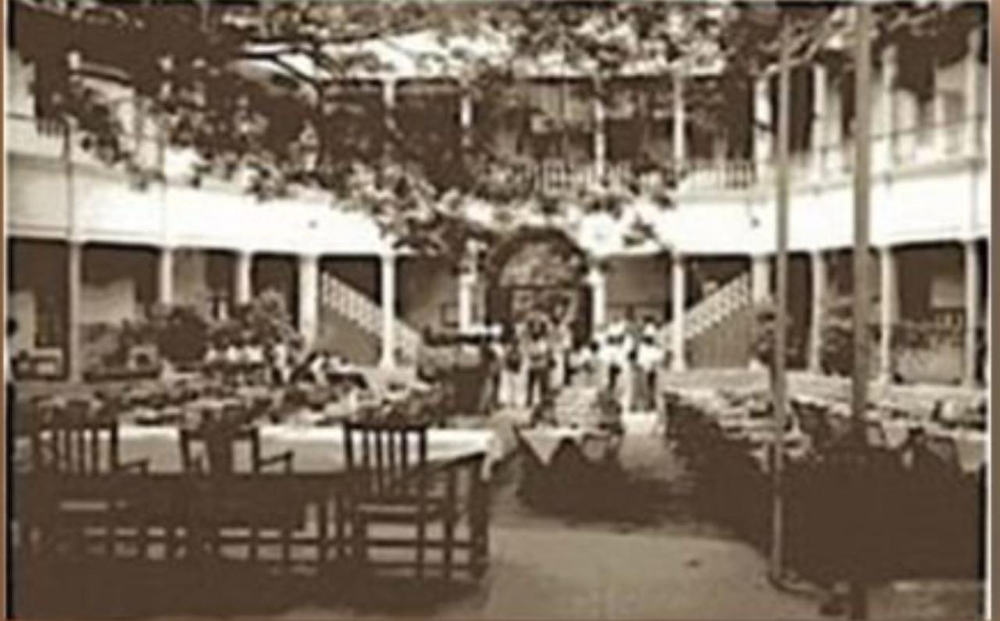
1970s
In response to the growing demand for engineers in emerging fields, UVCE introduced new courses in electronics engineering and architecture. This diversification aligned with the global shift toward electronics, telecommunications, and urban development. The architecture program, in particular, attracted many students interested in designing India’s rapidly modernizing cities. The college became a hub for innovation and a key player in shaping the country’s technological landscape.
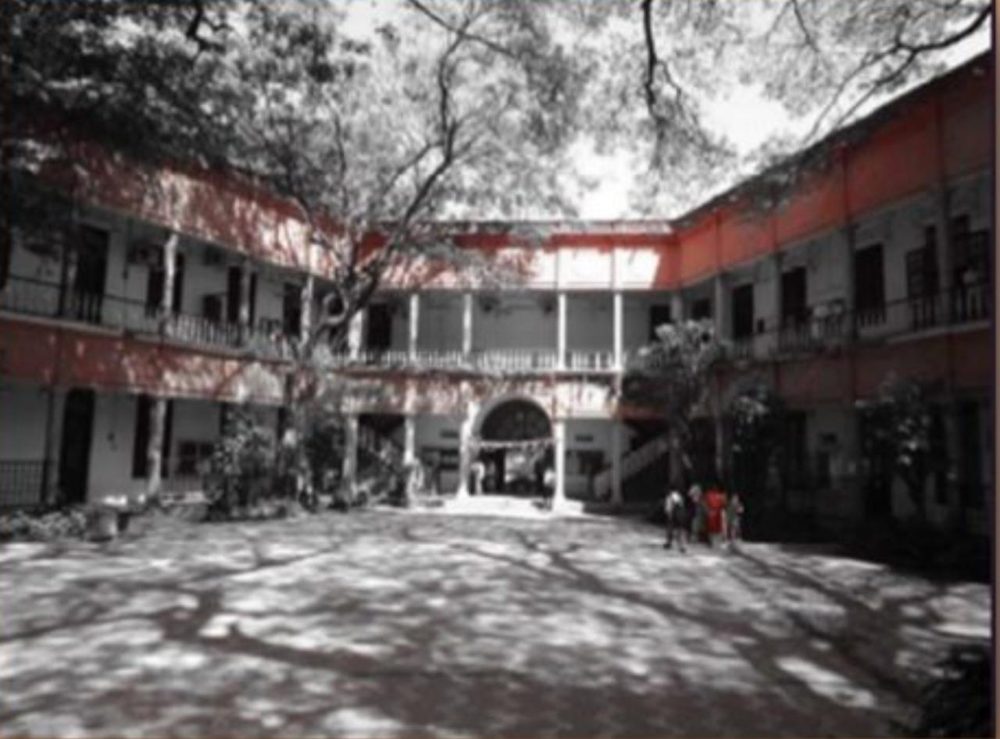
1980s
UVCE introduced computer science and telecommunications courses during this decade, recognizing the rapid advancements in computing and technology. These programs were timely, given the increasing demand for software developers and telecommunications experts, both in India and abroad. UVCE played a significant role in preparing India for the upcoming IT revolution, as many of its graduates became leaders in the software and tech industries.
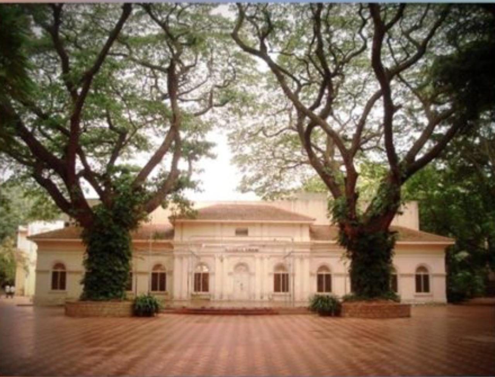
1990s
The 1990s brought about economic liberalization in India and a surge in demand for engineers in IT, software, and telecommunications. UVCE adapted its curriculum to reflect these changes, emphasizing programming, software development, and information technology. The college produced graduates who found employment in India’s burgeoning IT sector, helping companies like Infosys and Wipro grow. UVCE’s strong foundation in computer science made it a leader in producing tech-savvy engineers.
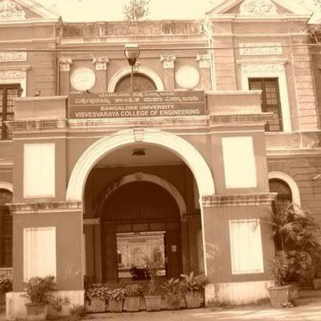
2004
UVCE continued to upgrade its infrastructure and expand its academic offerings. New programs in information technology and postgraduate research opportunities were introduced. The focus on research increased, with the college fostering collaborations with industries and other academic institutions. By this decade, UVCE had firmly established itself as a major player in both technical education and research, contributing to innovations in engineering and technology.
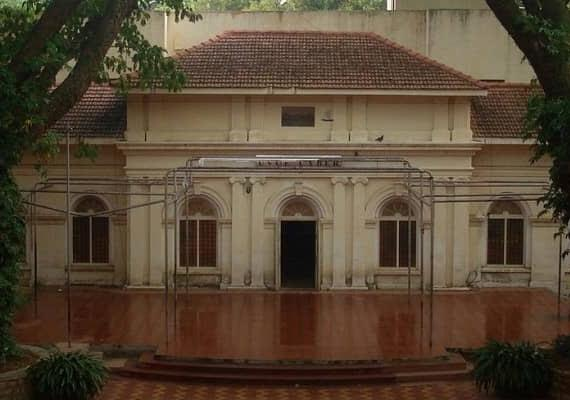
2010s
In this decade, UVCE began working towards gaining autonomy from Bangalore University to gain more control over its curriculum and administration. The college also integrated modern teaching methods, incorporating digital tools and platforms. With increasing focus on research and development, UVCE prepared itself to become a globally recognized institution. The college produced many notable alumni who excelled in academia, industry, and entrepreneurship.
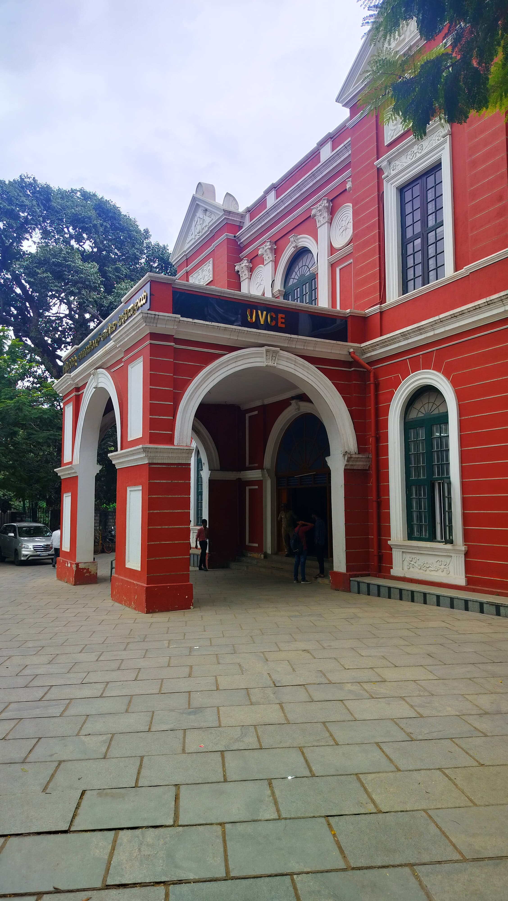
2020s
In 2022, UVCE achieved autonomous status, marking a major milestone in its evolution. With this new autonomy, the college gained flexibility to update its curriculum, encourage innovation, and enhance research output. The institution is now focused on expanding global partnerships, increasing research funding, and maintaining its legacy as a premier engineering college while adapting to the changing needs of modern technology and industry.